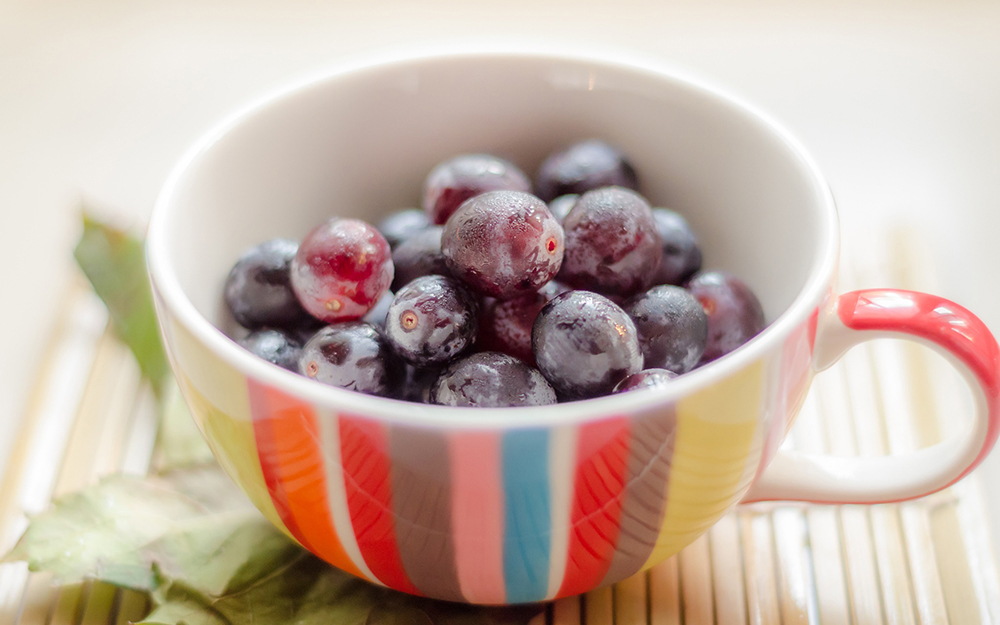

相对于大部分轮播插件来说，terseBanner删除了很多不实用或很少用的功能，只保留了最常用的，使用方便，功能完善，可以满足绝大多数网站的需求
支持 ie8 浏览器，支持触屏事件
- 

<style>
.banner{width: 960px;height: 540px;}
</style>
<div class="banner">
<ul>
<li><img src="img/banner-1.jpg"></li>
<li><img src="img/banner-2.jpg"></li>
<li><img src="img/banner-3.jpg"></li>
<li><img src="img/banner-4.jpg"></li>
<li><img src="img/banner-5.jpg"></li>
<li><img src="img/banner-6.jpg"></li>
</ul>
</div>
<script type="text/javascript" src="jquery-1.11.3.min.js"></script>
<script type="text/javascript" src="jquery.terseBanner.min.js"></script>
<script>
$('.banner').terseBanner();
</script>
自动化
自动添加轮播必须的元素，显著简化原生代码
<!-- 原始代码的结构 -->
<div class="banner">
<ul>
<li><img src="img/banner-1.jpg"></li>
<li><img src="img/banner-2.jpg"></li>
<li><img src="img/banner-3.jpg"></li>
</ul>
</div>
<!-- 自动生成的结构 -->
<div class="banner">
<div class="tb-list">
<ul>
<li style="background-image: url(img/banner-1.jpg)"></li>
<li style="background-image: url(img/banner-2.jpg)"></li>
<li style="background-image: url(img/banner-3.jpg)"></li>
</ul>
</div>
<div class="tb-arrow">
<a class="prev"></a>
<a class="next"></a>
</div>
<div class="tb-btn">
<a><i></i></a>
<a><i></i></a>
<a><i></i></a>
</div>
<div class="tb-thumb">
<dl>
<dd><img src="img/banner-1.jpg"></dd>
<dd><img src="img/banner-2.jpg"></dd>
<dd><img src="img/banner-3.jpg"></dd>
</dl>
<a class="prev"></a>
<a class="next"></a>
</div>
</div>
自动写入默认样式，轮播初始化时添加的元素自动排版（轮播的高度需要手动设置）
.tb-list,
.tb-list > *,
.tb-thumb dl{
position: relative;
overflow: hidden;
}
/* ... */
.tb-arrow{
width: 95%;
}
.tb-arrow a{
position: absolute;
top: 0;
cursor: pointer;
}
/* ... */
.tb-btn a{
display: inline-block;
width: 10px;
height: 10px;
margin: 0 5px;
background-color: #fff;
border-radius: 50%;
cursor: pointer;
}
/* ... */
.tb-thumb{
position: absolute;
bottom: 10px;
left: 0;
width: 100%;
overflow: hidden;
}
/* ... */
.tb-loading{
position: absolute;
top: 0;
left: 0;
width: 100%;
height: 100%;
}
/* ... */
自定义样式
也可以使用自定义的样式来覆盖默认的样式（在默认样式的选择器前面再加一级）
.custom .tb-arrow a{
width: 64px;
height: 64px;
margin: 0 20px;
opacity: 0;
-webkit-transition: all .3s;
transition: all .3s;
}
/* ... */
.custom .tb-btn{
bottom: 0;
height: 10px;
}
.custom .tb-btn a{
width: 160px;
margin: 0;
box-sizing: border-box;
background: #666;
border-right: 1px solid #fff;
border-radius: 0;
}
/* ... */
动画
4种动画方式：slide, fade, flash, none（flash模式是fade模式的简化，图片切换时可以出现闪烁的白色背景）
PS：slide模式不支持垂直方向的滑动
fade
- slide
- fade
- flash
- none
缩略图
自动截取原始图片的一部分作为缩略图，缩略图列表超出容器时自动添加列表滑动按钮
$('#thumbnail').terseBanner({
btn: false,
thumb: {
width: 150,
height: 84,
gap: 4,
visible: 3
}
});
也可以手动设置每一张缩略图,在原始图片的地址后面加上 ?thumb=...
<div class="banner" id="thumbnail">
<ul>
<li><img src="img/banner-1.jpg?thumb=img/thumb-1.jpg"></li>
<li><img src="img/banner-2.jpg?thumb=img/thumb-2.jpg"></li>
<li><img src="img/banner-3.jpg?thumb=img/thumb-3.jpg"></li>
<!-- ... -->
</ul>
</div>
延迟加载
减少大图片的单张加载时间（有默认的loading动画）
把图片的 src 属性换成 data-src 即可


<div class="banner" id="lazyload">
<ul>
<li><img data-src="img/banner-1.jpg"></li>
<li><img data-src="img/banner-2.jpg"></li>
<li><img data-src="img/banner-3.jpg"></li>
<!-- ... -->
</ul>
</div>
切换
可以在自定义的事件中切换轮播图片，给方法 terseBanner() 传递一个参数：'prev' | 'next' | [Number]
$('.play .btn .prev').click(function() {
$('#play').terseBanner('prev');
});
$('.play .btn .next').click(function() {
$('#play').terseBanner('next');
});
$('.play .btn ul li').click(function() {
$('#play').terseBanner(parseInt($(this).text()));
});
回调函数
init, before, after
可以传入的参数为 $banner, $item, currentIndex（参数说明在参数列表中）
$('#callback').terseBanner({
arrow: true,
init: function ($banner, $item) {
$item.each(function(i) {
$(this).append('<em>' + i +'</e>>');
});
},
before: function ($banner, $item, currentIndex) {
$item.eq(currentIndex).find('em').css({
top: -120,
opacity: 0
});
},
after: function ($banner, $item, currentIndex) {
$item.eq(currentIndex).find('em').css({
top: 210,
opacity: 1
});
}
});